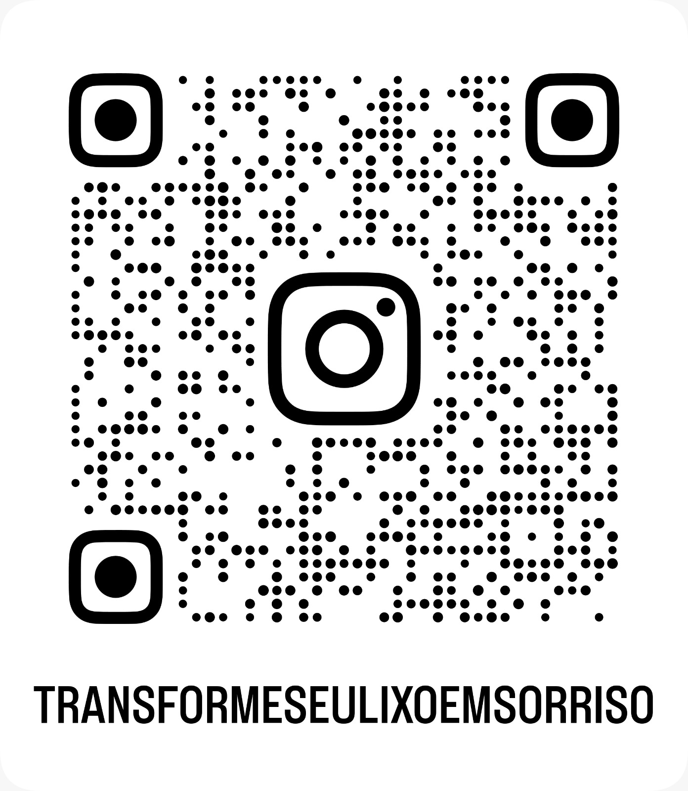

Objetivo:
Fazer a coleta de lixo eletrônico nos campus SEDE E CCS da faculdade FIED/UNINTA. Após a coleta, será realizada a separação e verificação dos materiais coletados e feito uma seleção das peças funcionais. A partir daí, montaremos novos aparelhos com os materiais descartados e que ainda estejam funcionando e realizaremos a venda ou doação para a ong que cuida das pessoas com necessidades especiais.
Entre em nosso instaram e saiba mais: 